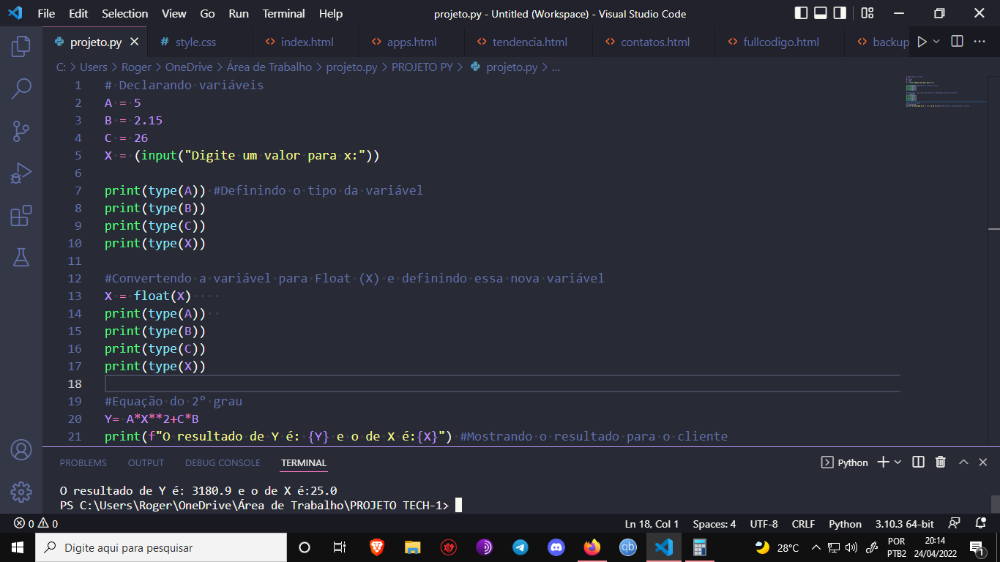
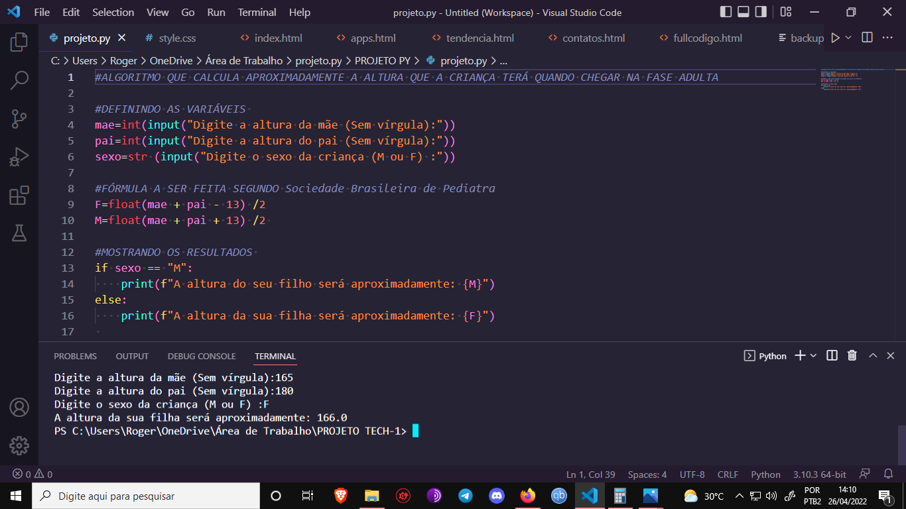

Sobre mim
Olá, me chamo Roger Gabriel, estou cursando o 2° período de Análise e Desenvolvimento de Sistemas, desenvolvi o Front-End desse site usando HTML5, e CSS3(Sem nenhum framework).Sou iniciante e ao longo do tempo irei me aprofundar cada vez mais como desenvolvedor de software, como dito acima, sei HTML, CSS e estou aprendendo Javascript (O básico do Front-End),porém atualmente também estou estudando o Back-End, pretendo me aprofundar bastante nessa parte do Desenvolvimento Web, estou aprendendo MySql e sei o básico de Python. Confira agora alguns dos meus algoritmos feitos em Python.
Algoritmo que calcula a média do aluno

Como dito acima, programei um simples algoritmo que calcula a média final com base na soma das quatro
primeiras notas do aluno e depois o resultado é dividido por dois, sendo assim,chegando num resultado
final.
EX: media=(nota1+nota2+nota3+nota4) /2
Algoritmo que calcula equação do 2° grau

Algoritmo que calcula aproximadamente a altura que a criança terá na fase adulta
Contato
E-mail=rg5712131@gmail.com / Telefone= +57 79 998308089